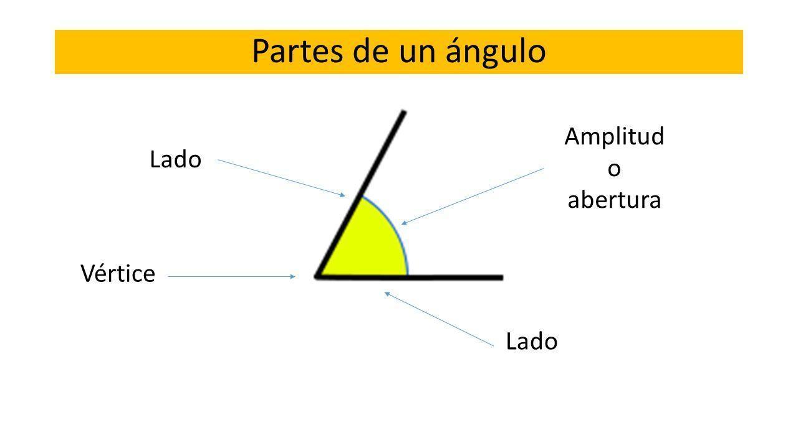
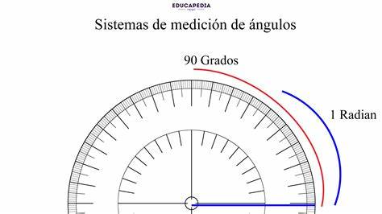
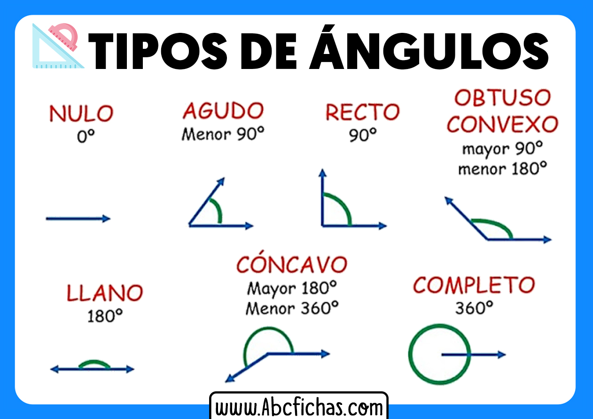

Angulos
Qué es un Ángulo?
Un angulo es la region del plano comprendida entre dos semirrectas (tambien llamadas lados del angulo) que parten del mismo punto, el vertice.
Partes de un Angulo
- Vertice: el punto de union de las dos semirrectas.
- Lados: las dos semirrectas que forman el angulo.
- Apertura o medida: el espacio entre los lados, medido en grados (°) o radianes.

Unidades para medir angulos
- Grados sexagesimales (°): el circulo completo se divide en 360 grados.
- Radianes (rad): en matematicas mas avanzadas, se usa esta unidad, donde una vuelta completa equivale a 2p radianes.

Tipos de angulo segun su medida
Tipos de angulo
| Tipo de angulo |
Medida en grados |
| Agudo |
Menor de 90° |
| Recto |
Exactamente 90° |
| Obtuso |
Mayor de 90° y menor de 180° |
| Llano |
Exactamente 180° |
| Concavo |
Mayor de 180° y menor de 360° |
| Completo |
Exactamente 360° |
Tipos de angulo segun su relacion con otros
Angulos complementarios: suman 90°.
Angulos suplementarios: suman 180°.
Angulos opuestos por el vertice: se forman al cruzarse dos lineas y son iguales.
Angulos adyacentes: comparten vertice y un lado, y no se superponen.
